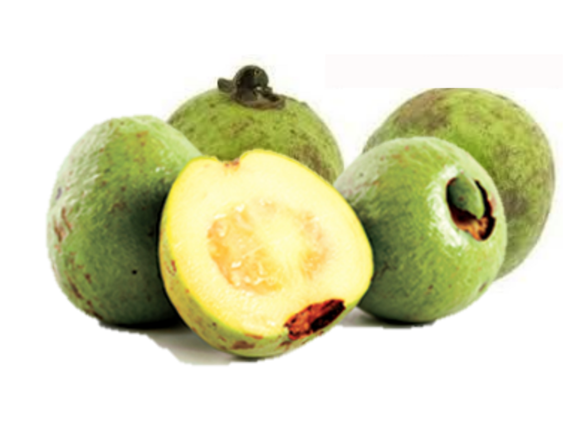

4 Cas
(Psidium friedrichsthalianum Nied.)

Ana M. Pérez, Carolina Rojas-Garbanzo
Centro Nacional de Ciencia y Tecnología de Alimentos (CITA)
Universidad de Costa Rica
Código Postal 11501-200, San José, Costa Rica
Autor para correspondencia: ana.perez@ucr.ac.cr
4.1 Características agronómicas
4.1.1 Taxonomía
El fruto Psidium friedrichsthalianum, perteneciente a la familia Myrtaceae, es originario de Costa Rica donde recibe el nombre de cas, que proviene del vocablo indígena brunca costarricense “kas”; se le conoce también como guayaba agria o guayaba coronilla en Colombia, guayaba del Chaco en Ecuador, arrayán en El Salvador, guayaba ácida en Guatemala, guayaba de danto y guayaba de Costa Rica en Honduras, guayaba de fresco en Nicaragua, guayaba de agua en Panamá, y guayabo cas en Venezuela, mientras que en inglés se le denomina Costa Rican guava (Morton, 1987; Baraona & Rivera, 1995; Quintero et al., 1999; Pino et al., 2002; Cordero & Boshier, 2003; Lim, 2012).
En el cuadro 4.1 se presenta la clasificación taxonómica del fruto de cas P. friedrichsthalianum.
| Reino | Plantae |
| Sub-reino | Viridiplantae |
| División | Tracheophyta |
| Clase | Magnoliopsida |
| Orden | Myrtales |
| Familia | Myrtaceae – myrtles, myrtacées |
| Género | Psidium L. – guavas |
| Especie | Psidium friedrichsthalianum (O. Berg) Nied. |
| Fuente: ITIS (s.f.) |
Es un árbol de tamaño mediano tipo arbusto, de copa globosa. Presenta ramas rojizas, follaje abundante de color verde intenso. La corteza es de color café rojiza con manchas grisáceas y desprendible. Presenta un follaje perennifolio, sus hojas son simples, opuestas, con pecíolos cortos, borde entero, de color verde oscuro en el haz y pálidas en el envés. Sus ramitas son lustrosas y cuadrangulares. Sus flores son solitarias, perfectas, blancas, de 15 cm de largo. Sus frutos son redondos u ovalados, de 3 a 6 cm de diámetro, con semillas aplanadas de 5 a 8 mm de largo, cuya cáscara presenta en su estado maduro una coloración verde a amarillenta, con una areola en el sitio donde estaba el cáliz (Figura 4.1) (Morton, 1987; Cordero & Boshier, 2003; Rojas-Rodríguez & Torres-Córdoba, 2013).
Figura 4.1: Figura 4.1 Frutos maduros y árbol de Psidium friedrichsthalianum.
4.1.2 Condiciones de cultivo
En Costa Rica se han sembrado tradicionalmente árboles de cas aislados o en pequeños grupos en patios y jardines caseros, así como en potreros o pastizales, y, de acuerdo con Vargas Sáenz (2014), más recientemente en plantaciones más extensas en los cantones de Pococí (Limón), Puriscal (San José) y Paraíso (Cartago), las cuales representan respectivamente 39 %, 30 % y 21 % de la producción nacional. También se han plantado árboles de cas asociados con el cultivo de café (Rojas-Rodríguez & Torres-Córdoba, 2013; Montero, 2018). Las plantaciones existentes se han generado por medio de semillas, lo que lleva a una gran variabilidad en las características de los árboles (Baraona, 2000).
Es un árbol que puede alcanzar de 6 a 10 m de altura y crece naturalmente desde Chiapas en el sur de México hasta Colombia y el oriente de Venezuela, en zonas de bosque húmedo tropical y subtropical, con pluviometría de 1400 a 3000 mm, a una altitud entre 90 y 1550 m, una temperatura entre 15 y 25 °C, en suelos de pH ácido, con poca tolerancia a las heladas o zonas bajas con sequía prolongada (Carabalí et al., 1989; Pino et al. 2002; Cordero & Boshier, 2003; Cuadrado Silva, 2016).
Los árboles de semilla pueden comenzar a producir fruto a los tres años (Cordero & Boshier, 2003). La producción primaria y comercialización del fruto fresco de cas a nivel nacional no es muy tecnificada (Sibaja Li, 2015). La producción promedio es de 30 kg/árbol, pero, en suelos con mejores condiciones de la provincia de Heredia se han registrado hasta 45 kg/árbol (Baraona & Rivera, 1995).
El cas “brasileño” es una variedad de fruto más grande, cosechada en Costa Rica, que fue introducido proveniente de Sur América en una época desconocida (Bogantes-Arias & Mora-Newcomer (2010), posee un sabor similar al cas criollo aunque más acentuado, y es un fruto más compacto, lo que permite mayores facilidades para su manejo poscosecha (Montero, 2018).
Para el período 2010-2017 las estadísticas del PIMA (Programa Integral de Mercadeo Agropecuario) indicaron en Costa Rica una producción anual máxima en el año 2014 que alcanzó un valor de 382,8 toneladas métricas, mientras que se reporta el valor más bajo para el año 2017, en el que se contabilizaron 202,6 toneladas comercializadas (PIMA, 2018). De acuerdo con Cuadrado-Silva (2016), en el 2011 en Colombia se reportó una producción anual de P. friedrichsthalianum de 563 toneladas, que se emplea para consumo a nivel doméstico, así como para la elaboración de jugos, sorbetes, helados y mermeladas.
Para cosechar el fruto en Costa Rica se consideran dos indicadores, el cambio de color de la cáscara de verde oscuro a un verde claro y la facilidad de desprendimiento del fruto de la rama; además, en temporada alta de cosecha, el productor acostumbra recoger del suelo aquellos frutos que se encuentran en buenas condiciones (Baraona & Sancho, 1992; Baraona, 2000). Por otra parte, el fruto de cas posee la ventaja de que debido a su uso la apariencia externa no es un factor muy relevante, por lo que los niveles de rechazo del producto son bajos (Cordero & Boshier, 2003).
De acuerdo con Quintero et al. (1999), el árbol de P. friedrichsthalianum se propaga principalmente por semilla alcanzando 92% de germinación en Colombia. Estos autores recomiendan utilizar semillas sin tratamientos pregerminativos, provenientes de frutos maduros y sin almacenar, mientras que Carabalí et al. (1989) indican que la semilla almacenada hasta por seis meses no se vio afectada en su germinación. Rojas-Rodríguez & Torres-Córdoba (2013) reportan un porcentaje de germinación de un 60 a 84% en Costa Rica, que varía en función de la calidad de la semilla. En el estudio realizado por Madrigal Ortiz (2011) se concluye que 25 °C sería la temperatura más adecuada para la germinación de las semillas de cas. De acuerdo con esta autora, dicha temperatura combinada con el uso de una pectinasa para la remoción de la pulpa (lo que permite además reducir la carga microbiana en la superficie de la semilla) aumenta la velocidad de germinación de las semillas.
La reproducción puede darse también por medio de estacas y acodos, aunque los métodos asexuales no son tan efectivos (Cordero & Boshier, 2003).
4.1.3 Estacionalidad
En Costa Rica, los árboles pueden producir frutos todo el año, con un máximo de cosecha de noviembre a diciembre, disminuyendo la producción de febrero a mayo, en la estación seca donde se presenta un déficit hídrico, factor que también afecta el tamaño del fruto (Baraona & Rivera, 1995). En Colombia, Carabalí et al. (1989) reportaron que la mayor época de fructificación corresponde a los meses de agosto-septiembre y enero-febrero.
4.1.4 Plagas y enfermedades
Baraona & Rivera (1995) reportaron daños por ninfas de homópteros (Fam. Membracidae), que pueden provocar el secamiento del pedicelo y la caída de flores. Estos autores también observaron gran cantidad de colembolas, trips y algunos coleópteros en las flores; además, entre las principales causas de deterioro del fruto desde el cuaje hasta la cosecha, se encuentran la mancha de asfalto y el daño provocado por Gloesporium sp., el cual puede producir caída cuando ataca frutos pequeños. A partir de la octava semana se observaron frutos dañados tanto por mancha de asfalto producida por el hongo Phyllachora sp., como por el mal del clavo (Gloeosporium psidii), y problemas de antracnosis causada por Colletotrichum sp., lo que acelera su deterioro, con posible momificación y caída (Baraona & Rivera, 1995). Además, se han observado ataques por mosca de la fruta y ácaros (Cordero & Boshier, 2003). El cas es resistente a nemátodos del género Meloidogyne sp., una plaga importante para el cultivo de guayaba (Madrigal Ortiz, 2011).
4.2 Características nutricionales
A partir de frutas ricas en compuestos bioactivos se pueden desarrollar alimentos funcionales beneficiosos para la salud. En la actualidad, hay una demanda creciente por parte de los consumidores, de alimentos que no solo tengan un alto valor nutricional, sino que aporten beneficios adicionales a la salud con el fin de retardar el envejecimiento y disminuir la incidencia de enfermedades crónicas o degenerativas como los problemas cardiovasculares, la diabetes y algunos tipos de cáncer. Estos efectos positivos en la salud se atribuyen a las distintas actividades biológicas asociadas a los compuestos bioactivos (Chang et al., 2013; Fracassetti et al., 2013).
Dentro del género Psidium, las especies comestibles más cultivadas son la guayaba fresa (P. cattleianum Sabine), la guayaba brasileña (P. guineense Sw.), la guayaba rosada (P. guajava L.) y el cas (P. friedrichsthalianum Nied.) (Mani et al., 2011), siendo estas dos últimas las frutas de este género más comunes en Costa Rica. La especie P. guajava L. es de las más populares en México y Centroamérica, donde el aprovechamiento de la planta incluye el uso de las hojas para realizar infusiones o tés. Las plantas P. cattleianum Sabine, P. guineense S.w. y P. littorale son más comunes en Brasil, siendo la fruta fresca la parte de la planta de mayor consumo.
A pesar de la importancia tradicional de P. friedrichsthalianum, existen muy pocos trabajos publicados que reporten su valor nutricional y contenido de compuestos bioactivos. Los estudios de la planta se han enfocado principalmente en la determinación de las condiciones de cultivo para prevenir el ataque de las moscas a la fruta o de otras plagas (Chaverri Sánchez, 2000; Morera Montoya, 2008; Soto Gallardo, 2010), condiciones agronómicas para el cultivo (Madrigal Ortiz, 2011; Picado González, 2002) o en la evaluación de alternativas de procesamiento (Bastos Alfaro, 2010; Herrera Campos, 2006; Lorenzo Jara, 1998; Sibaja Li, 2015; Vargas Sáenz, 2014).
De las frutas del género Psidium, la guayaba (P. guajava L.) es de las frutas más estudiadas, encontrándose reportes de composición físico-química y de compuestos bioactivos no solo del fruto sino también de las hojas. En el caso del cas (P. friedrichsthalianum), por el contrario la información es aún muy escasa y se limita a algunos estudios realizados con la fruta fresca o jugos. Dicha información se detalla a continuación en los siguientes apartados realizando una comparación de lo reportado por varios autores.
4.2.1 Composición nutricional del fruto
La primera descripción del valor nutricional del cas corresponde a la caracterización realizada por Morton (1987) con fruto de Guatemala, la cual se limita al reporte del contenido de humedad, proteína, grasa, carbohidratos y cenizas (Cuadro 4.2), luego Menchú y Méndez (2007) extienden esta caracterización reportando el contenido de vitamina C. En el estudio realizado por Vargas Sáenz (2014), la caracterización se amplía a la determinación del valor energético total y por grasa, fibra dietética, perfil de azúcares, polifenoles totales y la medición de la capacidad antioxidante hidrofílica (H-ORAC, por sus siglas en inglés) del fruto entero (cáscara y pulpa) y de un jugo obtenido por microfiltración tangencial. Recientemente, Rojas-Garbanzo (2017) realizó una caracterización del fruto y evaluó el efecto del proceso de elaboración de pulpa de cas bajo dos condiciones distintas de pasteurización, sobre su composición proximal, perfil de ácidos orgánicos y contenido de compuestos bioactivos polares. La información nutricional reportada para este fruto se detalla en el Cuadro 4.2.
| Parámetro (g/100 g) | Calibarí (1989) | Morton (1987) | Mitra et al. (2012) | Menchú y Méndez (2007) | Rojas-Garbanzo (2017) (1) | Vargas Sáenz (2014) (2) |
|---|---|---|---|---|---|---|
| Humedad | 85,8 | 83,15 | 83,2 | 86,5 | 81,6 | 82,4 |
| Grasa | 0,8 | 0,39 – 0,52 | 0,44 | 0,8 | – | 0,2 |
| Cenizas | 0,2 | 0,80 | 1,1 | – | 0,64 | |
| Proteína (Nx6,25) | 0,8 | 0,78 - 0,88 | 0,82 | 1,2 | – | 0,5 |
| Carbohidratos totales | 5,75 – 6,75 | 6,2 | 10,4 | – | 13,1 | |
| Carbohidratos disponibles | – | – | – | – | 6,2 | |
| Valor energético (kJ/100 g; kcal/100 g) | – | – | 200 / 48 | – | 212 / 51 | |
| Valor energético por grasa (kJ/100 g / kcal/100 g) | – | – | – | – | 7 (2) | |
| Acidez (expresada como mg ácido cítrico/100 g) | 2,1 | – | – | – | 3.13 | 3,28 |
| pH | 2,7 | – | – | – | 2,77 | 2,7 |
| Sólidos solubles (° Brix) | 6,0 | – | – | – | 11,2 | 12,9 |
| Fructuosa | – | – | – | 1,99 | 1,4 | |
| Glucosa | – | – | – | 2,83 | 0,3 | |
| Sacarosa | – | – | – | 1,90 | 3,1 | |
| Parámetros de color | L* | – | – | – | 1,1 | 66 |
| a* | – | – | – | 3,5 | 4,23 | |
| b* | – | – | – | 36,2 | 36 | |
| (1) Valor promedio de 9 muestras; (2) valor promedio de 4 muestras. |
\(~\)
Se puede observar la variabilidad en la composición fisicoquímica del fruto, que depende de las zonas de cultivo, grado de madurez del fruto y metodología de análisis utilizada. Como se observa en el cuadro 4.2 se destaca la alta acidez del fruto. El bajo pH del fruto se puede considerar también como una ventaja para el desarrollo de productos que requieren tratamiento térmico, pues el valor, muy por debajo de 4,5, permite aplicar tratamientos de pasteurización leves para un eficiente control de microorganismos patógenos en jugos (Mazzotta, 2001). Además, de acuerdo con Menchú y Méndez (2007), el cas es fuente de vitaminas B1, B2, B3 y de los minerales calcio, fósforo y hierro. En cuanto al contenido de carbohidratos totales, al menos el 40% corresponde a azúcares simples tales como fructuosa, glucosa y sacarosa.
Con respecto a los atributos sensoriales del cas, Pino et al., (2002) realizaron una primera caracterización de los compuestos responsables del aroma de la fruta, la cual se describe como dulce y con ciertos tonos de maderas y notas florales inclusive mucho más fuerte que el de la guayaba. Estos autores reportan la caracterización de 173 compuestos volátiles, de los cuales (E)-β-caryopheleno, α-terpineol, α-pineno, α-selineno y β-selineno fueron los compuestos mayoritarios. Los autores indican que son los ésteres alifáticos y compuestos terpénicos los responsables del aroma único y particular del cas.
Según Cuadrado Silva (2016, 2017a), el aroma del cas se caracteriza por ser agradable e intenso, que recuerda a la guayaba común (P. guajava), pero con notas olfativas diferentes como verde, terrosa, láctea, azufrada, y un descriptor de sabor característico que es el ácido. Estos autores caracterizaron 18 compuestos orgánicos volátiles activos olfativamente, por medio de la aproximación sensómica, sobre el extracto SAFE (Solvent-Assisted Flavour Evaporation) de los frutos frescos del cas. Entre ellos, se identificaron ésteres alifáticos, compuestos alifáticos tipo C6 y compuestos de tipo azufrado, como responsables de las notas olfativas frutal, dulce, verde, tropical, y azufrada, siendo los compuestos clave del aroma: el butanoato de etilo, el hexanoato de etilo y el (Z)-3-hexenal. Los compuestos azufrados, disulfuro de dimetilo, 2-metilditiolano, metional, acetato de 3-sulfanilhexilo, 3-sulfanil-1-hexanol y bis(metiltio)metano se reportaron como biomarcadores del aroma de este fruto (Cuadrado-Silva et al. 2017a). En la figura 4.2, se representan las estructuras químicas de los biomarcadores del aroma de cas.
Figura 4.2: Figura 4.2 Estructura química de los principales compuestos volátiles sulfatados responsables del aroma particular del cas. Fuente: Cuadrado-Silva (2017).
4.2.2 Composición funcional del fruto
En el caso del P. friedrichsthalianum, Flores et al. (2013) realizan un primer reporte donde el perfil de compuestos bioactivos se basa en 6 sustancias de carácter principalmente flavonoide (ácido elágico, miricetina, aldehído 4-O-β-piranósido-sinápico, quercitrina y quercetina. Los autores no indican sin embargo, cuál es el componente mayoritario del extracto metanólico obtenido, atribuyen a la quercetina el efecto antioxidante y antiinflamatorio obtenido en los ensayos in vitro desarrollados.
Posteriormente, Cuadrado-Silva et al. (2017b) extienden dicha caracterización a 22 compuestos fenólicos derivados de ácidos hidroxibenzoicos, fenilacéticos e hidroxicinámicos, flavonoides y taninos condensados. El compuesto mayoritario en la fruta fresca fue (+)-catequina (17,95 mg/g), seguido de procianidina B1 (14,15 mg/g), procianidina B2 (10,82 mg/g), (-)-epicatequina (9,53) y ácido elágico (4,76), correspondiendo la suma de estos cinco compuestos al 95% del total de los polifenoles cuantificados.
En el estudio realizado por Rojas-Garbanzo (2017), se reporta sin embargo la caracterización de 102 compuestos fenólicos, un sesquiterpenoide, un iridoide y 6 triterpenoides en la cáscara y pulpa del cas de manera independiente (Cuadro 4.3). La cáscara muestra un perfil más complejo que la pulpa al tener 30 compuestos fenólicos más y 44 metabolitos secundarios que son detectados únicamente en la cáscara (eucaglobulina, isómeros cis del ácido cafeoil-quínico, derivados de flavanolignanos y varias proantociandinas tipo B), por otro lado, 17 compuestos fueron detectados únicamente en la pulpa (biflavonoides y elagitaninos C-glicosidados). Los autores reportan un contenido de polifenoles en la cáscara 29,5% mayor que en la pulpa (1260.0 ± 3.8 mg/100 g b.s. y 887.4 ± 5.7 mg/100 g b.s., respectivamente). En ambas partes de la planta, los principales polifenoles fueron las proantocianidinas tipo B, correspondiendo a 52% y 35% de los polifenoles cuantificados, en cáscara y pulpa respectivamente. El segundo grupo en importancia fueron elagitaninos C-glicosidados (19% y 34%, respectivamente). Las principales proantocianidinas son dímeros y trímeros de (epi)catequina y los principales elagitaninos son isómeros de geranina, pedunculagina, vescaligina y castalagina.
Al analizar el fruto completo (cáscara y pulpa juntas), los principales polifenoles son los elagitaninos C-glicosidados antes mencionados y el compuesto fenol cinnamoil-O-glucosa, siendo los dos isómeros de geranina el 42% del total de los polifenoles cuantificados (Rojas-Garbanzo, 2017).
| Grupo de compuesto | Nombre | Parte del fruto |
|---|---|---|
| Ácido gálico y derivados | Galloil-hexosa | Cáscara y pulpa |
| Ácido gálico | Cáscara y pulpa | |
| Metilfloroglucinol-galoil-hexosa | Cáscara y pulpa | |
| Eucaglobulina | Cáscara | |
| Cinnamoil-galoil-O-hexosa | Cáscara y pulpa | |
| Dihidroferuloil-O-hexosa-galato | Cáscara y pulpa | |
| Derivados de ácido cinámico | Ácido protocatecoil-cafeíco | Cáscara y pulpa |
| Cafeoil-O-hexosa | Cáscara y pulpa | |
| Ácido 5-p-Cumaroilquínico | Cáscara y pulpa | |
| Ácido3-p-Cumaroilquínico | Cáscara y pulpa | |
| Ácido cafeico | Cáscara | |
| Cinnamoil-O-hexosa | Cáscara y pulpa | |
| Dihidroferuloil-O-hexosa | Cáscara | |
| Dimetoxicinnamoil-O-hexosa | Cáscara y pulpa | |
| Ácido cafeoil-feruloil-quínico | Cáscara y pulpa | |
| Isómeros de ácido clorogénico | Ácido 1-O-cafeoilquínico | Cáscara |
| Ácido cis-1-O- cafeoilquínico | Cáscara | |
| Ácido 3-O- cafeoilquínico | Cáscara y pulpa | |
| Ácido cis-3-O- cafeoilquínico | Cáscara | |
| Ácido 5-O- cafeoilquínico | Cáscara y pulpa | |
| Ácido 4-O- cafeoilquínico | Cáscara | |
| Ácido cis-5-O- cafeoilquínico | Cáscara | |
| Ácido cis-4-O- cafeoilquínico | Cáscara | |
| Derivados de ácido elágico y elagitaninos | Vescalagina | Cáscara y pulpa |
| Pedunculagina | Pulpa | |
| Geranina | Pulpa | |
| Galoil-bis-HHDP-glucosa | Pulpa | |
| Castalagina | Cáscara y pulpa | |
| Ácido elágico-pentosa | Cáscara y pulpa | |
| Flavanonas | Naringenina-O-hexosa | Cáscara y pulpa |
| Flavonoles | Quercetina-galoil-hexosa | Cáscara |
| Quercetina-3-O-galactosa | Cáscara y pulpa | |
| Quercetina-3-β-D-glucosa | Cáscara y pulpa | |
| Quercetina-glucuronídica | Cáscara y pulpa | |
| Quercetina-O-pentosa | Cáscara | |
| Quercetina-O-hexosa | Cáscara y pulpa | |
| Quercetina-(galoil)-O-pentosa | Cáscara y pulpa | |
| Quercetina-deoxihexosil-hexosa | Cáscara | |
| Quercetina Cáscara | ||
| Quercetina-(galoil-O-hexosa) | Cáscara | |
| Isorhamnetina | Cáscara | |
| Flavanoles monoméricos | Galocatequina | Cáscara y pulpa |
| Epigalocatequina | Cáscara y pulpa | |
| Catequina | Cáscara y pulpa | |
| Epicatequina | Cáscara y pulpa | |
| Galocatequina-galato | Cáscara y pulpa | |
| Epicatequina-galato | Cáscara y pulpa | |
| Proantocianidinas | PAC Tipo-B (E)C-(E)GC | Cáscara |
| PAC Tipo-B (E)GC-(E)C | Cáscara | |
| PAC Tipo-B (E)GC-(E)GC | Cáscara | |
| PAC Tipo-B (E)C-(E)C | Cáscara y pulpa | |
| PAC Tipo-B (E)C-(E)C-(E)C | Cáscara | |
| Flavanolignanos | Deoxicinchonaína I | Cáscara |
| Cinchonaína I | Cáscara y pulpa | |
| Dihidrocalconas | Notofagina | Cáscara y pulpa |
| Floretina- O-hexosa | Cáscara y pulpa | |
| Floretina-3-O-glucosa | Cáscara y pulpa | |
| Floretina Cáscara | ||
| Acetofenonas | Mirciafenona B | Cáscara |
| Benzofenonas | Guavinoside B | Cáscara y pulpa |
| Biflavonoides | Agatisflavona | Pulpa |
| II-2,3-dihydro-I3’,II8-biapigenina | Pulpa | |
| Amentoflavona | Pulpa | |
| Terpenoides | ||
| Sesquiterpenoide | Ácido abscísico | Cáscara y pulpa |
| Iridoide | Ácido logánico | Cáscara y pulpa |
| Triterpenoides | Ácido madecásico | Cáscara y pulpa |
| Ácido asiático | Cáscara | |
| Ácido guavenoico | Cáscara | |
| Fuente: Rojas-Garbanzo (2017) |
Ejemplos de las estructuras químicas de algunos de los principales compuestos bioactivos en el cas se muestran en la figura 4.3.
Figura 4.3: Estructura química base de principales compuestos bioactivos en el fruto de Psidium friedrichsthalianum.
Cabe resaltar sin embargo, que los polifenoles presentes mayoritariamente en el cas, corresponden a los polifenoles llamados no extraíbles. Los resultados de estos estudios se basan en la obtención de un extracto de metanol donde los polifenoles considerados no extraíbles no son cuantificados en su totalidad, debido a que el método de extracción utilizado no es suficiente para eliminar la interacción de estos compuestos con estructuras tales como la pared celular (Dominguez-Rodriguez et al., 2017), por tanto, la cuantificación actualmente reportada es subestimada.
Existen otros compuestos bioactivos presentes en el cas fuera de la categoría de polifenoles tales como fibra dietética y ácidos orgánicos, dentro de los que se contabilizan los ácidos ascórbico y dehidroascórbico. En el cuadro 4 se presenta una comparación del contenido de algunos de estos compuestos reportados por varios autores.
| Parámetro (g/100 g) | Mitra et al. (2012) | Menchú y Méndez (2007) | Rojas-Garbanzo (2017) | Vargas Sáenz (2014) |
|---|---|---|---|---|
| Fibra dietética | – – – 6,9 | |||
| Polifenoles totales (mg ácido gálico/100 g) | – | – | 485,8 | 755,7 |
| H-ORAC (µmol de trolox/100 g) | – | – | 4539 | 6349 |
| Ácido cítrico | – | – | 1,5 | – |
| Ácido málico | – | – | 0,24 | – |
| Ácido succínico | – | – | 1,27 | – |
| Vitamina C total (mg/kg) | 22 - 50 | 240 | 422 | 1108 |
| Ácido ascórbico (mg/kg) | – | – | 218 | 393 |
| Ácido dehidroascórbico | – | – | 205 | – |
En el caso de frutas Psidium, existe un reporte donde se compara la capacidad antioxidante de siete variedades de la guayaba (P. guajava L.) (Flores et al., 2015). Estos valores no son comparables con el valor de H-ORAC para el cas (Cuadro 4) dado que son análisis distintos, DPPH y ORAC, respectivamente. Sin embargo, Flores et al. (2015) atribuyen la actividad antioxidante de la guayaba a la vitamina C y a flavonoides tales como flavonoles y antocianinas dependiendo de la variedad. En el caso de las cas, se podría atribuir el valor de H-ORAC también a la vitamina C y a los flavanoles, polifenoles que se encuentran en mayor cantidad que los flavonoles (Rojas-Garbanzo, 2017).
El cas presenta un contenido de vitamina C mayor a varias frutas cítricas, la cuales son reconocidas por ser una buena fuente de esta vitamina. De acuerdo a Lee y Kader (2000), el contenido de vitamina C en frutas cítricas tales como limón, mandarina y naranja oscila entre 37,3 mg/100 g b.h.y 83,2 mg/100 g b.h., valores menores a los reportados para el cas (Rojas-Garbanzo, 2017; Vargas Sáenz, 2014).
De acuerdo al Reglamento Técnico Centroamericano RTCA 67.01.60:10 de Etiquetado nutricional de productos alimenticios preenvasados para consumo humano para la población a partir de 3 años de edad (MEIC-MS, 2002), el fruto del cas fresco puede ser considerado como un alimento alto, buena fuente, rico en, o excelente fuente de fibra dado que el valor mínimo para dicha declaración corresponde a 6 g/100 g b.h.[1] El consumo de fibra en la alimentación aporta beneficios a la salud ya que permite un mayor control del sistema digestivo humano, mejorando la eliminación de triglicéridos de baja densidad, así como la disminución de problemas de estreñimiento (Manach et al., 2004.
4.2.3 Productos alimenticios
La pulpa de cas, de textura suave, color blanco y muy ácida, se emplea en Costa Rica en la elaboración de bebidas, helados, jaleas y mermeladas, salsas de frutas o toppings para productos lácteos, principalmente. Se comercializa como fruta fresca y pulpa pasteurizada, la que se distribuye a restaurantes, servicios de alimentación y heladerías pequeñas (Baraona & Rivera, 1995; Cordero & Boshier, 2003; Lim, 2012). La apariencia del fruto no es tan importante como su sabor y aroma, por lo que la cantidad de fruta que se desecha es muy poca dentro del total de la producción (Cordero & Boshier, 2003), y esta sería una ventaja del cultivo puesto que no se consume como fruta fresca sino procesada.
A pesar de la gran aceptación que tiene esta fruta a nivel nacional, se considera que la elaboración de productos procesados en Costa Rica a partir del cas es incipiente; esto debido principalmente a la escasa información disponible sobre el manejo técnico de las plantaciones y a una producción insuficiente de materia prima, dado que el mercado no asegura al productor un volumen y precio mínimo de compra (Montero, 2018).
Aún con estas limitaciones, algunos intentos de desarrollo de productos se han llevado a cabo enfocados en la aplicación de tecnologías o evaluación de los parámetros de la tecnología tradicional que permitan mantener las características nutricionales y funcionales de la fruta fresca. El primer ejemplo es el desarrollo de un jugo clarificado de cas por medio de microfiltración tangencial (Vargas Sáenz, 2014). Previo a la etapa de filtración, se aplicó una etapa de tratamiento enzimático con el objetivo de aumentar el rendimiento de extracción de jugo y disminuir los sólidos insolubles, lograr una liberación de los compuestos bioactivos que presentan interacciones con las paredes celulares y mejorar la eficiencia de la operación de microfiltración. En esta última operación, Vargas Sáenz (2014) evaluó el efecto de la temperatura sobre los parámetros de eficiencia de la microfiltración y sobre el valor nutricional del jugo de cas, determinando las mejores condiciones a una temperatura de 25 °C. Desde el punto de vista nutricional y funcional, esta temperatura es favorable porque permite realizar el proceso con un menor impacto negativo sobre el contenido de compuestos bioactivos tales como vitamina C, ácidos orgánicos y polifenoles.
A partir del jugo obtenido, se elaboró una bebida de cas que contiene un 35% del jugo de cas microfiltrado y se evaluó sensorialmente, obtenido un porcentaje de agrado por la bebida y una intención de consumo alto.
Por otro lado, Sibaja Li (2015) evaluó la aplicación de tecnologías emergentes (tratamientos no térmicos) como ultrasonido y ultravioleta como operaciones complementarias previas a los tratamientos térmicos para determinar su efecto sobre las características físico-químicas, calidad microbiológica y sensorial de un jugo de cas. En este estudio se reporta que la aplicación de estas tecnologías de manera independiente o combinadas no afecta el pH, o el contenido de sólidos solubles, pero sí los parámetros de color aumentando la tonalidad del color amarillo (b*) y rojo (a*) y disminuyendo la luminosidad (L*) en el caso del jugo con tratamiento ultravioleta, no así para el jugo tratado con sonicación o combinación de ambas tecnologías. Con ambas tecnologías, el efecto sobre el contenido de vitamina C es con tendencia a su disminución; dicho efecto se hace mayor al aumentar el tiempo de tratamiento. La degradación de la vitamina C puede deberse a procesos oxidativos debido a las reacciones de termólisis y de pardeamiento enzimático (Sibaja Li, 2015). Se ha reportado que la sonicación disminuye el oxígeno disuelto favoreciendo la generación de radicales libres como el hidroxilo que reaccionan con el ácido ascórbico en la superficie de las burbujas (Adekunte et al., 2010; Tiwari et al., 2009).
Por último, en el estudio realizado por Rojas-Garbanzo (2017) se determina el efecto del proceso de elaboración de una pulpa de cas comparando dos condiciones de pasteurización (71,1 °C por 4 s y 60 °C por 8.2 min utilizando un pasteurizador continuo y una marmita, respectivamente). En este estudio se determinó que el proceso de elaboración del jugo tiene un efecto significativo sobre el contenido de humedad, la acidez total, los parámetros de color a*, b* y hue, así como en el contenido de ácido cítrico y ácido succínico, en el contenido de los compuestos fenólicos cinnamoyl-*O*-glucosa, un isómero pedunculagina y los isómeros de castalagina, estos últimos afectados negativamente al presentar una pérdida de 40% del contenido en la fruta fresca. Por el contrario, los parámetros de pH, azúcares, ácido málico, ácidos ascórbico y dehidroascórbicos, los isómeros vescalagina y geranina, así como la capacidad antioxidante hidrofílica no son afectados por el proceso de elaboración del jugo de cas.
En estos tres estudios, el jugo de cas se obtuvo mediante la aplicación de un tratamiento enzimático acoplado a una operación de prensado, presentando valores de pH de 2,59 ± 0,05 a 2,77 ± 0,01, y un contenido de vitamina C total de 75,4 ± 6,8 mg/100 g a 1108 ± 433 mg/100 g (Rojas-Garbanzo, 2017; Sibaja Li, 2015, Vargas Sáenz, 2014), superior al reportado en jugos de otras frutas.
4.2.4 Propiedades terapéuticas y farmacológicas
Los resultados reportados por Cuadrado-Silva (2016) indican que el consumo de P. friedrichsthalianum, podría tener efectos positivos para la salud, dado que favorece el crecimiento de una microbiota intestinal benéfica, presentando por lo tanto un efecto prebiótico, y provoca una disminución en la población de firmicutes, bacterias que están asociadas con problemas de obesidad.
El estudio realizado por Montoya Arroyo (2017) indicaría que la ingesta de una bebida de cas en un modelo animal con ratas Wistar, se encuentra asociada con la disminución de la excreción de metabolitos relacionados de manera directa o indirecta con el estado oxidativo celular (citrato, α-cetoglutarato, lactato, succinato).
Flores et al. (2013) reportaron actividad antioxidante y antiinflamatoria en una fracción de acetato de etilo de un extracto rico en polifenoles obtenido a partir de pulpa de cas, determinada después de una exposición secundaria a humo de cigarrillo. Estos resultados indicarían el potencial de estos componentes para su aplicación en una terapia dirigida al tratamiento de la enfermedad obstructiva crónica pulmonar.
Granados-Chinchilla et al. (2016) determinaron los aceites esenciales en hojas y frutos de P. friedrichsthalianum cultivados en Costa Rica en dos estaciones diferentes (seca y lluviosa), además de estudiar su potencial antimicrobiano contra patógenos que pueden causar enfermedades transmitidas por alimentos. Entre los 75 compuestos volátiles identificados en frutos de cas, estos autores reportaron, como mayoritarios 2H-pirano-2,6-(3H)-diona [26.4%], ácido cis-13-octadecenoico [14.0%], α-terpineol [11.7%] y ácido n-hexadecanoico [9.6%]. Los aceites esenciales de los frutos de cas presentaron una actividad inhibitoria contra Pseudomonas aeruginosa y Proteus mirabilis similar a la de una solución de oxitetraciclina (concentración de 10 μg mL-1).
4.3 Referencias
Baraona, M. 2000. Jocote, anona, cas: tres frutas campesinas de América. EUNA. Heredia: Costa Rica.151 p.
Baraona, M., Rivera, G. 1995. Desarrollo del jocote (Spondias purpurea L.) y del cas (Psidium friedrichsthalianum (Berg.) Niedz) en el bosque húmedo premontano de Costa Rica. Agronomía Mesoamericana 6: 23-31.
Baraona, M., Sancho, E. 1992. Coco, pejibaye, guayaba y cas. Fruticultura especial, fascículo 4. EUNED, San José.
Bastos Alfaro, M. J. 2010. Desarrollo y documentación del plan HACCP y 5 procedimientos requisito del capítulo 7 (Planificación y realización de productos inocuos) de la norma ISO 22000:2055 para la línea de mermeladas y comparación de la eficiencia de dos desinfectantes diferentes en el procedimiento de limpieza y desinfección de la guayaba fresca utilizada como materia prima en la empresa Ujarrás S. A. Tesis de Licenciatura en Tecnología de Alimentos, Universidad de Costa Rica.
Bogantes-Arias, A., Mora-Newcomer, E. 2010. Evaluación de cuatro patrones para injertos de guayaba (Psidium guajava L.). Agronomía Mesoamericana 21(1):103-111.
Carabalí, A., Libreros, J., Muñoz, J., Cruz, G. 1989. Contribución al estudio de la guayaba coronilla, Psidium ffriedrichsthalianum Berg-Niedenzu. Acta Agronómica. 20(3-4):172-181.
Chang, C-H., Hsieh, C-L., Wang, H-E., Peng, C-C., Chyau, C-C., Peng, R. Y. 2013. Unique bioactive polyphenolic profile of guava (Psidium guajava) budding leaf tea is related to plant biochemistry of budding leaves in early dawn. Journal of the Science of Food and Agriculture. 93(4): 944-954.
Chaverri Sänchez, L. G. 2000. Biología y fluctuación poblacional de Anastrepha striata Schiner (Diptera: Tephritidae), plaga de la guayaba (Psidium guajava L.) en una zona húmeda de Costa Rica. Tesis de Licenciatura, Universidad de Costa Rica.
Cordero, J., Boshier, D. 2003. Árboles de Centroamérica. Centro Agronómico Tropical de Investigación y Enseñanza (CATIE). p. 814-816. www.arbolesdecentroamerica.info/index…/209_e982ffa8ca77b33cdc0675d22f98f8f9
Cuadrado Silva, C.T. 2016. Estudio químico de las propiedades sensoriales y biofuncionales de la guayaba agria (Psidium friedrichsthalianum Nied.). Tesis de Doctorado en Ciencias-Química, Universidad Nacional de Colombia, Bogotá, Colombia.
Cuadrado Silva, C.T., Pozo-Bayón, M.A., Osorio, C. 2017a. Identification of aroma compounds and precursors of sour guava (Psidium friedrichsthalianum Nied.) following a sensomics approach. European Food Research and Technology 243(1):1-10.
Cuadrado Silva, C.T., Pozo-Bayón, M.A., Osorio, C. 2017b. Targeted metabolomic analysis of polyphenols with antioxidant activity in sour guava (Psidium friedrichsthalianum Nied.) fruit. Molecules, 22(1), 11.
Flores, G., Dastmalchi, K., Wu, S-B., Whalen, K., Dabo, A. J., Reynertson, K. A., Faronjy, R. F., DÁrmiento, J. M., Kennelly, E. J. 2013. Phenolic-rich extract from the Costa Rican guava (Psidium friedrichsthalianum) pulp with antioxidant and anti-inflammatory activity. Potential for CDPO therapy. Food Chemistry, 141(2), 889-895. Flores, G., Wu, S-B., Negrin, A., Kennelly, E. J. 2015. Chemical composition and antioxidant activity of seven cultivars of guava (Psidium guajava) fruits. Food Chemistry. 170: 327-335.
Fracassetti, D., Costa, C., Moulay, L., Tomas-Barberán, F. A. 2013. Ellagic acid derivatives, ellagitannins, proanthocyanidins and other phenolics, vitamin C and antioxidant capacity of two powder products from camu-camu fruit (Myrciaria dubia). Food Chemistry. 139(1-): 578-588.
Herrera Campos, M. 2006. Plan de exportación de bocadillos de plasta de guayaba hacia República Dominicana para la empresa productos Ujarrás S.A. Tesis de Licenciatura, Universidad de Costa Rica.
ITIS. s.f. Integrated Taxonomic Information System, Report Database, Psidium friedrichsthalianum. Consultado 9 de mayo de 2018. Disponible en https://www.itis.gov/servlet/SingleRpt/SingleRpt?search_topic=TSN&search_value=506171#null
Lee, S. K., Kader, A. A. 2000. Preharvest and postharvest factors influencing vitamin C content of horticultural crops. Postharvest Biology and Technology. 20: 207-220.
Lim, T.K. 2012. Edible Medicinal and Non-Medicinal Plants: Fruits. Volume 3, Springer. p. 681-683.
Lorenzo Jara, F. A. 1998. Almacenamiento y conservación de semillas de guayaba (Psidium guajava L.) y caracterización de doce genotipos de la colección CATIE. CATIE, Turrialba.
Madrigal Ortiz, V. 2011. Determinación del comportamiento germinativo de semillas de cas (Psidium friedrichsthalianum L.), provenientes de la localidad de Coris de Cartago, sometidas a diferentes temperaturas, métodos de extracción de semillas y periodos de almacenamiento. Trabajo final de graduación de Licenciatura en Ingeniería Agronómica, Universidad de Costa Rica.
Manach, C., Scalbert, A., Morand, C., Rémésy, C., Jiménez, L. 2004. Polyphenols: food sources and bioavailability. The American Journal of clinical Nutrition. 79: 727-747.
Mani, A., Rachana, M., Thomas, G. 2011. Elucidation of diversity among Psidium species using morphological and SPAR methods. Journal of Physiology, 3(8), 53-61.
Mazzotta, A. S. 2001. Thermal inactivation of stationary-phase and acid-adapted Escherichia coli O157:H7, Salmonella, and Listeria monocytogenes in fruit juices. Journal of Food protection, 64(3)315-320.
Menchú, M., Méndez, H. 2007. Tabla de composición de alimentos de Centroamérica. 2da ed. INCAP/OPS, Guatemala.
Ministerio de Economía, Industria y Comercio & Ministerio de Salud (MEIC-MS). 2002. RTCR: 135:2002 Etiquetado nutricional de alimentos preenvasados. Decreto N° 30256 MEIC-MS. Gobierno de Costa Rica, San José.
Montero, A. 2018. Cultivo del cas en Costa Rica. Programa de Frutales, Ministerio de Agricultura y Ganadería, San José, Costa Rica. Comunicación personal.
Montoya Arroyo, A. 2017. Efecto de la administración de una bebida de cas (Psidium friedrichsthalianum Ndz.) sobre el perfil metabolómico en orina de rata Wistar. Tesis de Maestría Académica en Ciencias Biomédicas con énfasis en Bioquímica y Fisiología Celular, Universidad de Costa Rica.
Morera Montoya, R.. 2008. Evaluación de diferentes materiales de embolsado para el control de la mosca de la fruta (Anastrepha sp.) en frutos de guayaba (Psidium guajava L.) variedad Tai-Kuo en Carrillos de Alajuela. Tesis de Licenciatura, Universidad de Costa Rica.
Morton, J. 1987. Costa Rican guava. p. 365. In: Fruits of warm climates. Julia F. Morton, Miami, FL.
Picado González, R. 2002. Estudio de viabilidad financiera para la producción del cas en la zona de Turrialba. CATIE.
PIMA. 2018. Volumen de oferta en Centro Nacional de Abastecimiento y Distribución de Alimentos (CENADA): cas, período 2010-2017. Programa Integral de Mercadeo Agropecuario (PIMA). Ministerio de Agricultura y Ganadería. San José, Costa Rica. http://bpm.pima.go.cr:8080/ap/cm/PG29L2/AuraPortal.aspx
Pino, J.A., Marbot, R., Vázquez, C. 2002. Characterization of volatiles in Costa Rican guava [Psidium friedrichsthalianum (Berg) Niedenzu] fruit. Journal of Agricultural and Food Chemistry, 50: 6023-6026.
Quintero, J., Peña, G., Rivero, G. 1999. Evaluación de tratamientos pregerminativos en guayabo Cas (Psidium friedrichsthalianum Berg-Niedenzu). II. Utilización de capa vegetal y humus como sustrato. Revista de la Facultad de Agronomía (LUZ), 16 Supl. 1: 8-12.
Rebouças, E.R., Gentil, D.F.O., Ferreira, S.A.N. 2008. Caracterização física de frutos e semejantes de goiaba-da-Costa-Rica, produzidas em Manaus, Amazonas. Revista Brasileira de Fruticultura Jaboticabal. 30 (2): 546-548.
Rojas-Garbanzo, C. 2017. Morphological and chemical characteristics of fruits of the genus Psidium with special reference to bioactive compounds. Tesis de Doctorado em Trophologiae, Universidad de Bonn, Alemania. Cuvillier Verlag Göttingen.
Rojas-Rodríguez, F., Torres-Córdoba, G. 2013. Árboles del Valle Central de Costa Rica, reproducción: cas (Psidium friedrichthalianum (Berg) Ndzu). Revista Forestal Mesoamericana Kurú (Costa Rica), 10(25): 30-31.
Sibaja Li, P. 2015. Evaluación del efecto de la aplicación de tecnologías emergentes (ultrasonido y ultravioleta) sobre la calidad fisicoquímica, microbiológica y sensorial de jugo de cas (Psidium friedrichsthalianum (Berg.) Niedz.) y agua de pipa (Cocos nucifera L.). Trabajo final de graduación de Licenciatura en Ingeniería de Alimentos, Universidad de Costa Rica.
Soto Gallardo,R. 2010. Evaluación de dos tipos de mallas para la exclusión de la mosca de la fruta Anastrepha striata Schiner, (Diptera: Tephritidae) en guayaba Taiwanesa (Psidium guajava L.) variedad Tai-Kuo en Carrillos de Alajuela. Tesis de Licenciatura en Ingeniería Agronómica, Universidad de Costa Rica.
Vargas Sáenz, D. 2014. Estudio del proceso de elaboración de jugo clarificado de cas (Psidium friedrichstalium (Berg.) Niedz.) mediante microfiltración tangencial para el desarrollo de una bebida. Trabajo final de graduación de Licenciatura en Ingeniería de Alimentos, Universidad de Costa Rica.